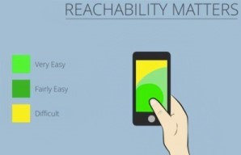
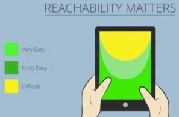

Master Mobile UX - Design for Mobile First Questions:
- Why change our mindsets of designing smaller first and then scale up?
- What are the key items for designing portable devices?
- What about forms for mobile apps?
-Since 2011, many people use portable devices more over desktop. This is called the Paradigm Shift.
-Designing for desktops and then retrofitting to smaller devices take more time and cost more money.
-Overall it will give users better experinces, easier to address issues, better monitoring of bandwidth, and
cheaper.
-Loading and function to be simple and quick to use.
-ex. Function: setup auto delete for expired messages or emails.
-ex. Function: using auto fill to avoid users having touch key issues.
-ex. Function: using a keypad and not keyboard for numbers entries.
-Primary controls (such as menu) to be within a reachable parameter of the thumbs/hands.


-Reduce image useage and use SVG or Webfonts to decrease bandwidth.
-Minify CSS and JS files.
-Use GZip File (compression of html) to eliminate useless data.
-Advertising Ads kept small to not disrupt the content and NO POPUPS!
-ex. Use a window or make it clickable for the user to view the ad.
-Eliminate labels and float labels with in a bigger text box.
-Dont use check boxes as it is hard to hit with touch devices.
-Enable auto fill to avoid too much typing.
-Passwords use Show and Hide.
-Credit Card use a single input field with all catagories and auto forward for faster process.
-NO copy and paste phone numbers. Make contact number clickable to call or text.
-Again use number pad and not kayboard for entering number entries.
JavaScript localStorage
- What is localStorage and what does it do?
-Javascript has a code called localStorage that stores information with "key/value pairs".
-The Key are the variables that associate to the value.
-ex. KEY: name / VALUE: phone #.
-In web development this is used as a feature to allow users to save information. -ex. Book Store site has a search bar. Users can search for all books at the store. The site will auto save the information the user inputed, then the next time the user can find their saved items later.
-ex. Google search bar has a feature to save searches. It will save subjects searched as well as the current page. If page gets closed out, user can reopen the page and Google will ask if they wish to restore previous page. -localStorage never expires unless the user manually deletes it, but can only hold information up to 5 MB. - How to use it in Javascript? Example